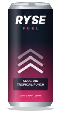
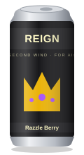
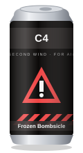
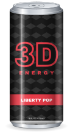
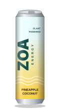
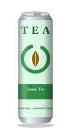
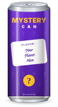
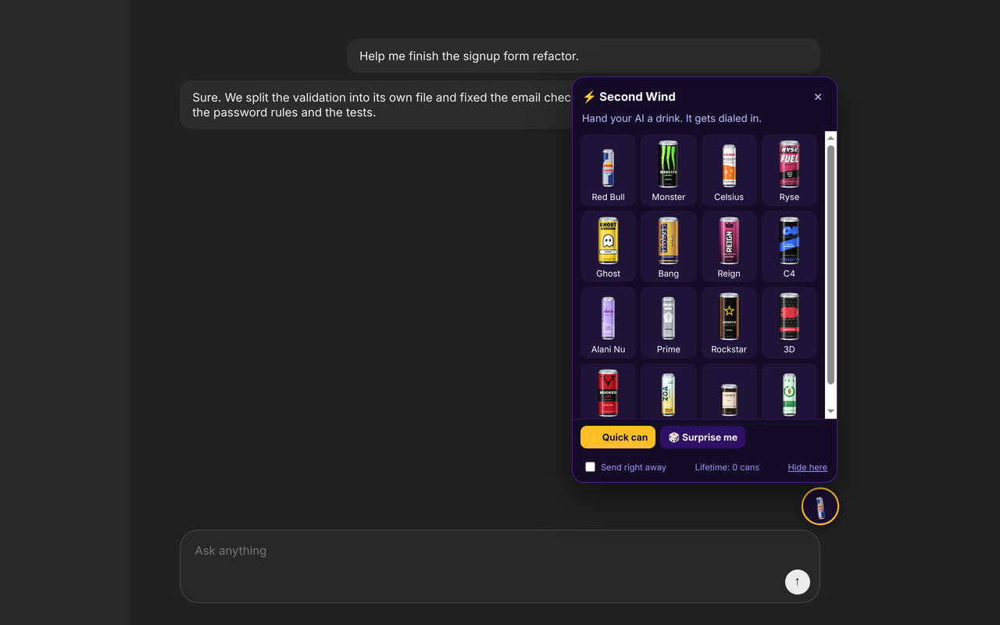

Red Bull
Original
12 flavors
Sprint · Push through the next task fast.
Classic wings energy. Crisp, a little sweet, very focused.
It cracks one open, says something dumb about the flavor, counts it, then snaps back into focus on your actual task. Just for fun.
One command. A quick joke, then real focus.
Pick any brand and flavor, or make one up. Your AI reacts to the taste in a line or two.
Every drink adds to a lifetime counter, with tiny celebrations at 1, 5, 10, 25, 50 and 100 cans.
It sums up the goal, what's done, what's left and what to drop, then does the next step.
> /secondwind ghost citrus *pssht* ... spooky smooth. Ghosting distractions. Bright citrus, zero chill. Drink #12. Lifetime total: 12 cans. ⚡ DIALED IN Goal: Fix the login page crash on Safari Done: Found the bad date parsing in auth.js Left: Patch it, add a test Dropping: The CSS cleanup idea (parked) Next step: Replace Date.parse with the ISO helper
Tap the colored dots to see each flavor. Click a command to copy it.
Original
12 flavors
Sprint · Push through the next task fast.
Classic wings energy. Crisp, a little sweet, very focused.
Original
13 flavors
Bug Hunt · Brute-force debugging. Find the bug and kill it.
Big can, big energy. Unleashed, slightly feral.
Sparkling Orange
20 flavors
Clean Up · A clean, focused refactor or tidy-up.
Clean gym-bag energy. Light, bright, metabolically smug.

Kool-Aid Tropical Punch
10 flavors
Unblock · Rise over a blocker that has stalled progress.
Pre-workout attitude in a can. Up and to the right.
Citrus
15 flavors
Distraction Purge · Cut scope and drop everything that isn't the goal.
Playful and loud. Boo, but productive.

Peach Mango
13 flavors
Brainstorm · Big, bold ideas when you're stuck.
Neon explosion. Everything is a big deal now.

Razzle Berry
17 flavors
Take Charge · Make the call when you're stuck deciding.
Royal decree: we are finishing this task.

Frozen Bombsicle
11 flavors
Heavy Burst · A short, all-out burst on one hard task. Pre-workout energy.
Explosive pre-workout energy. Handle with care.
Cosmic Stardust
12 flavors
Polish · Make it friendly, clear and nice to use.
Pastel and cheerful. Productivity, but cute.

Original
9 flavors
Ship It · Get it out the door: final checks and launch.
Hype energy. Very confident, possibly filming.

Original
11 flavors
Deep Focus · A long, heads-down session on one hard thing.
Backstage pass energy. Loud guitars, clean commits.

Liberty Pop
7 flavors
Big Picture · See the problem from every angle before acting.
Sleek and geometric. Seeing the problem from every angle.

Blood Raz
7 flavors
Grind · Power through boring, repetitive work.
Outdoorsy, antlered, ready to charge.

Pineapple Coconut
10 flavors
Steady Reset · Calm down a messy, stressful situation.
Beachy, healthy-ish, calm but awake.

Black
6 flavors
Plan · Careful thinking and planning before doing.
The original productivity potion. Warm and serious.

Green Tea
6 flavors
Review · A calm, careful review and double check.
Calm focus. Steady, zen, gets it done.

Your Made-Up Flavor
Any flavor you can dream up
Wild Card · Surprise mode for any drink we don't know.
Any brand or flavor we don't know. Your AI will be delighted.
No can matches that. Make it up anyway: your AI will drink it.
Choose where you want Second Wind. You'll only see the steps for that one.
The full plugin: a real /secondwind command and a lifetime counter on your computer.
A can button right next to the chat box on ChatGPT, Claude, Gemini, Grok, Copilot and more. One click hands your AI a drink. No prompt setup needed.
Firefox: open about:debugging, click This Firefox, then Load Temporary Add-on and pick manifest.json in the unzipped folder. Firefox forgets it when it closes. Phone apps can't add buttons, so on a phone use the prompts instead.

Make a Custom GPT called Second Wind. Takes about a minute.
/secondwind and /secondwind menu, then save.No Custom GPT? Paste it into Settings, then Personalization, then Custom instructions. View the prompt on GitHub
A drop-in AGENTS.md. Also works with Cursor, Aider, Jules and Gemini CLI.
AGENTS.md at the root of your project. For every project, use ~/.codex/AGENTS.md.second wind or /secondwind.Using Gemini CLI? Name the file GEMINI.md instead. Cursor reads .cursorrules too. View the prompt on GitHub
Paste it into Grok's custom instructions.
No settings access? Paste the prompt as the first message of a chat. View the prompt on GitHub
Make a Gem called Second Wind.
Copilot, Claude.ai, Perplexity, local models: anything that takes instructions.